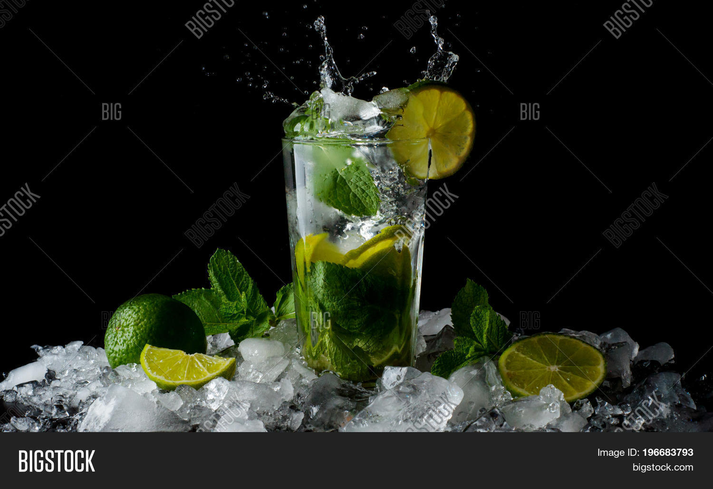

Mojito

What is a Mojito?
A mojito is a refreshing cocktail made with white rum, lime juice, fresh mint leaves, sugar, and soda water. It's known for its crisp and invigorating taste, perfect for sipping on a sunny day.
Ingredients
- 3 mint leaves
- 1/2 ounce simple syrup
- 2 ounces white rum
- 3/4 ounces lime juice, freshly squeezed
- Club soda, to top
- Garnish: mint sprig
- Garnish: lime wheel
Steps
- Lightly muddle the mint with the simple syrup in a shaker.
- Add the rum, lime juice and ice, and give it a brif shake, then strain into a highball glass over fresh ice.
- Top with the club soda.
- Garnish with a mint sprig and lime wheel.
Home